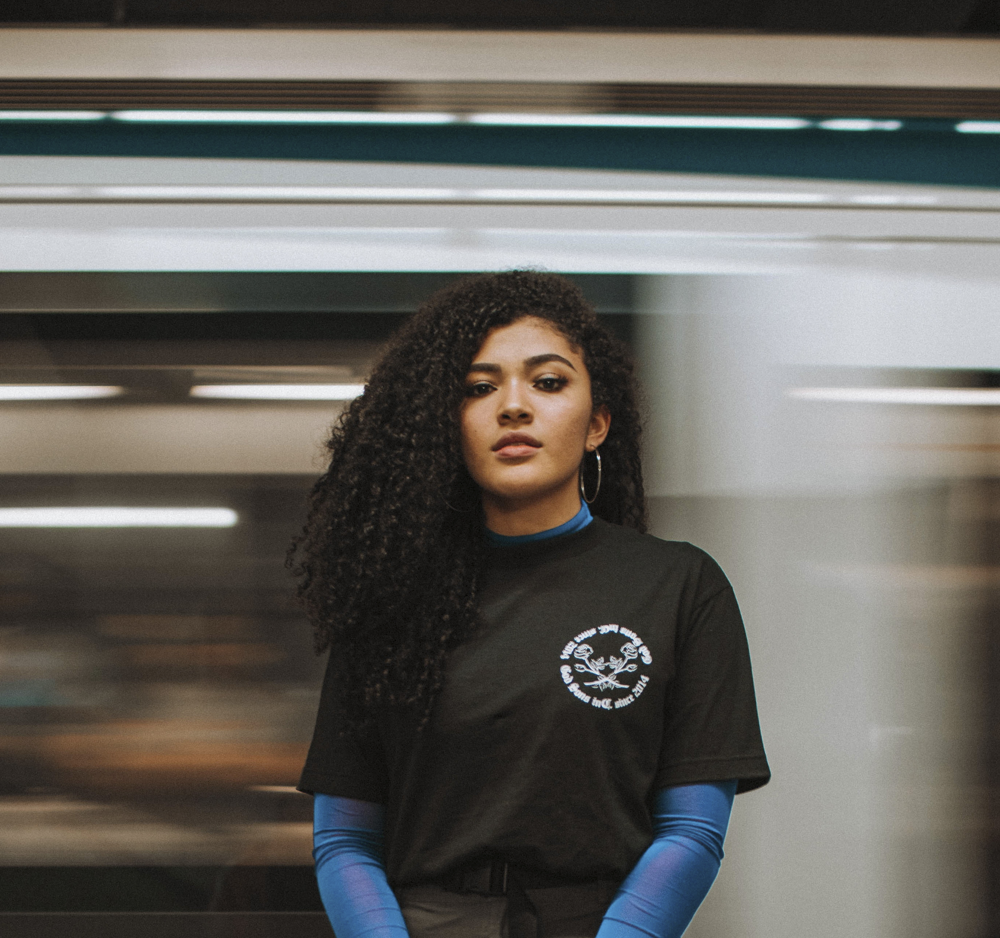
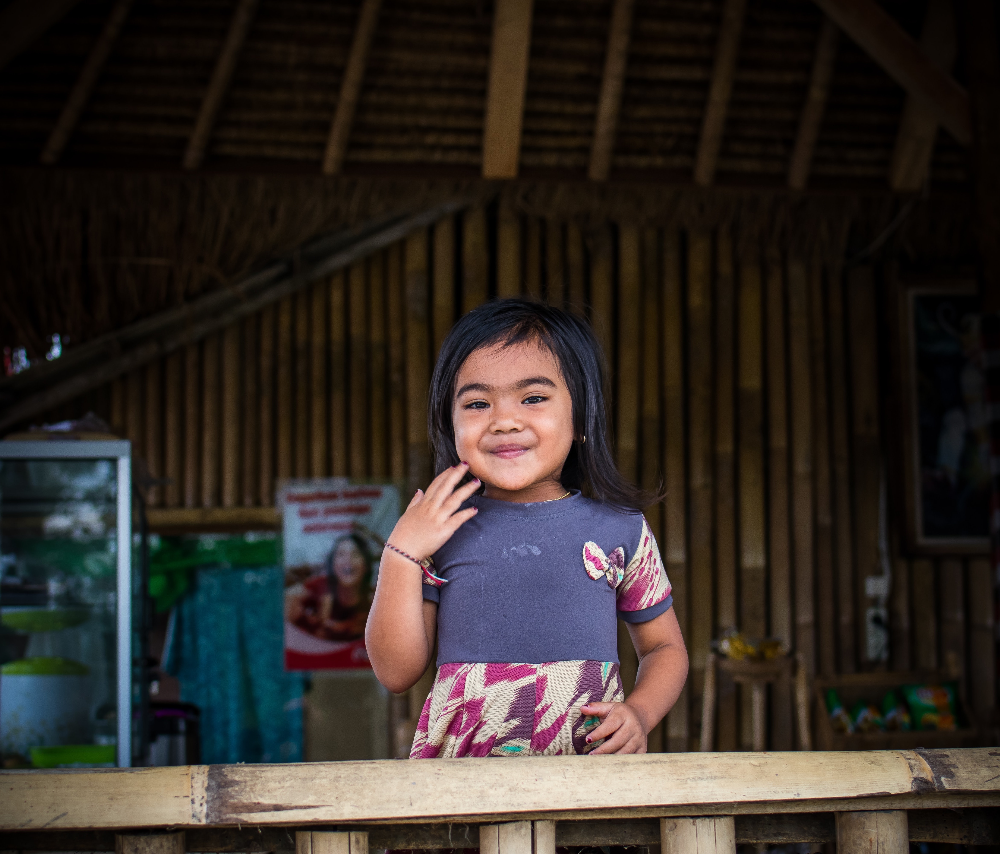
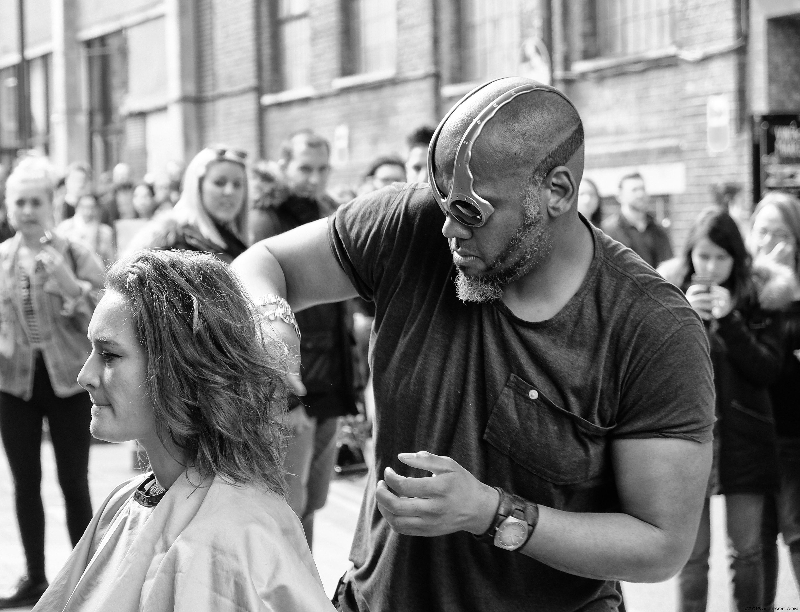
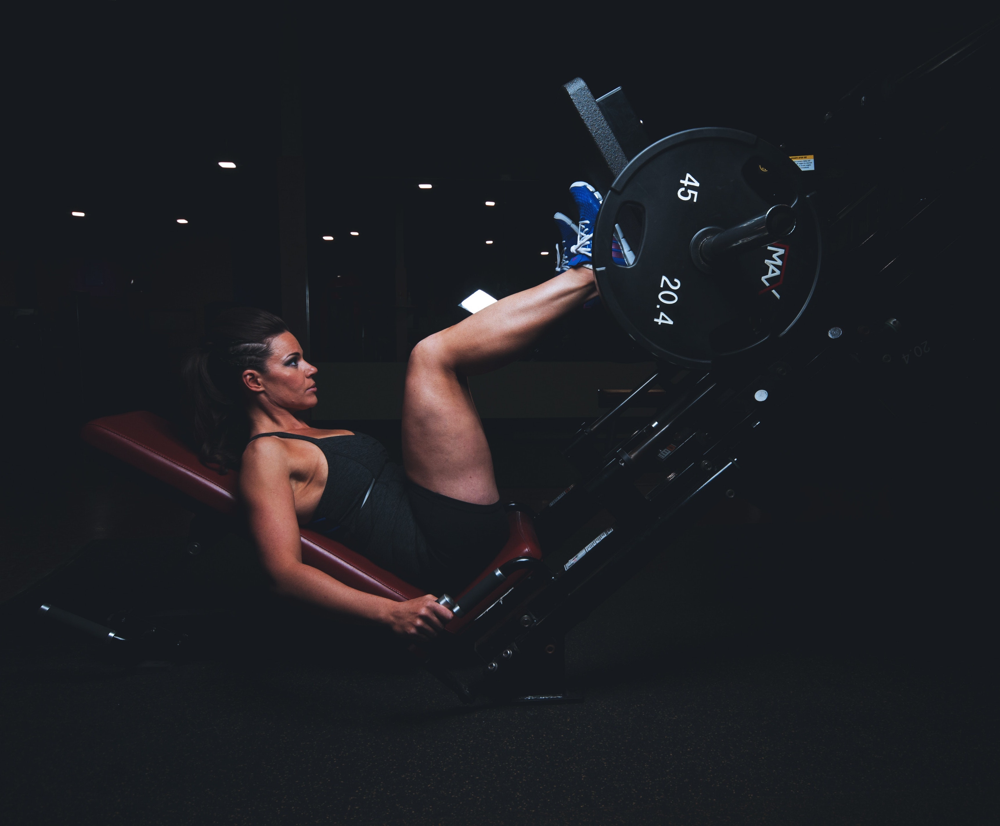

About
My work focuses on candid photographs taken on location at events for women's rights, places where women are owning their space, and fleeting encounters on the streets. My work engulfs the viewer in real moments of strength, vulnerability, and solidarity.
Work
FemRock Fest, Austin Texas - July 17, 2018
 Father, Denver Colorado - June 25, 2018
Father, Denver Colorado - June 25, 2018
Smile, San Francisco - August 4, 2018
Haircut, New York City - March 31, 2018
Flex. Madison, WI. July 24, 2015
Black Girl Magic. Houston, TX. January 16, 2016